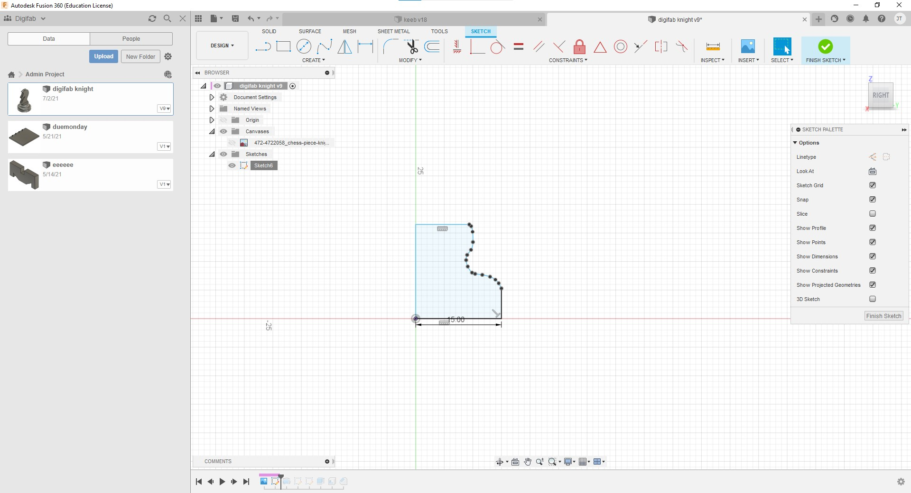

The model of the knight chestpiece was referenced of google images and put into Fusion 360.

Firstly, the base of the knight chestpiece was skteched out,
Next, the base was revolved by using the Revolve tool.
After that, the rest of the knight chestpiece was sketched out.
Which is followed up by the extrusion of the body.
The base of the knight chestpiece is then made hollow by using the Shell Tool.
Finally, the edge of the body of the knight chestpiece was chamfered to create a slight bevel.